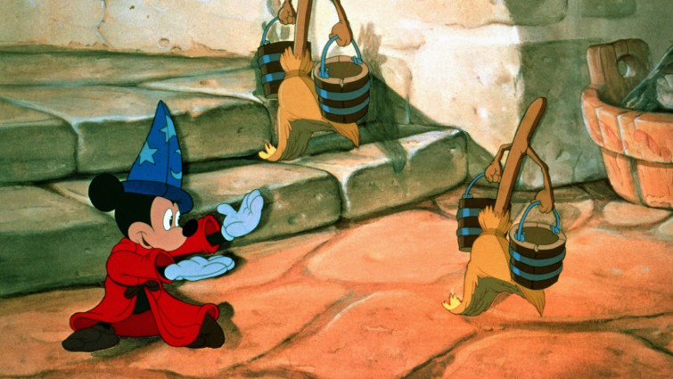
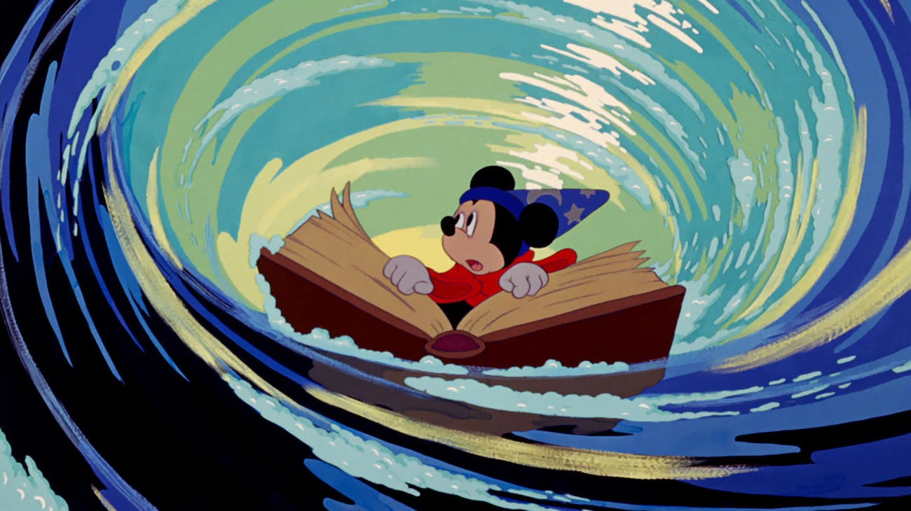
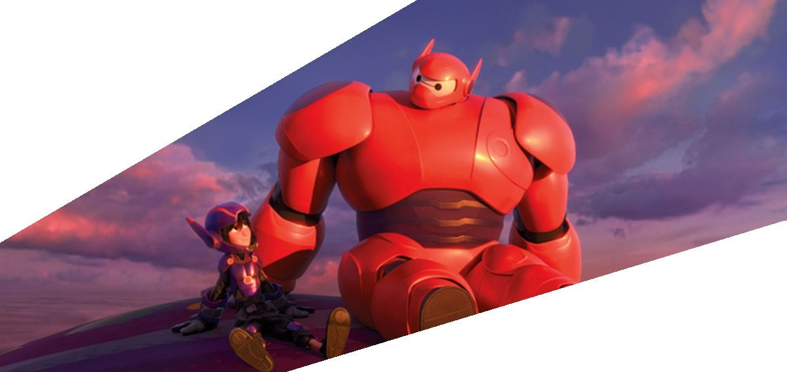
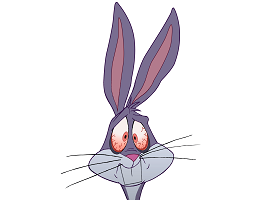

Attempting to sum up the history of animation in just a few films is a near impossible task! Like any artistic medium, animation is full of innovators, game-changers, and unparalleled geniuses. Using moving images to tell stories has been around since prehistoric times, although animation as we think of it today truly started in the 19th century, developing through the invention of devices such as the magic lantern and zoetrope. After the emergence of cinema things really developed, mostly through short films in the silent era.
As the technology progressed, so did the scale of what could be achieved, with animation evolving into one of the most artistically and commercially significant genres in all of cinema, and becoming a defining element of children's film. Remarkably, the genre only continues to grow in popularity and sophistication today, and the days of one animated feature being released a year are long gone. Now there are dozens each year, hailing from around the world, pushing storytelling possibilities in new ways, and continuing to develop new animation techniques. Here are a selection of some of the most significant, from the silent era through to the present day.
We also have film lists on hand-drawn animation, 3D/CGI animation, VFX, stop-motion, cut-out animation, and rotoscoping.

VINTAGE MICKEY(1928)
A collection of some of the earliest Mickey Mouse cartoons, including his first appearance in 'Steamboat Willie'.
Few characters are as associated with animation as t Disney mascot Mickey Mouse. This collection of early short films show the evolution of the character and demonstrate the speed at which animation, and the Disney company were evolving. The most iconic remains Steamboat Willie, which introduced themes and techniques that would be carried forward into full-length features.
More Info

THE ADVENTURES OF PRINCE ACHMED(1926)
This magical fantasy is the oldest surviving animation film in the world, telling an Arabian Nights-style story using a stunning silhouette style.
The oldest surviving animated film in the world, this magical story is directed by German animator Lotte Reiniger. Making the film involved cut-outs in a technique that was similar to shadow puppets, laying the ground for scores of fantastic animated films that would follow.
More Info

SNOW WHITE AND THE SEVEN DWARFS (1937)
Disney's funny, beautifully drawn animated version of the classic fairytale about a lovey princess on the run from her wicked stepmother.
Disney’s film was the first to be made using entirely hand drawn animation, introducing the world to a style of storytelling that would dominate commercial animation for many decades. More than eighty years later, Show White’s adventures with Dopey, Grumpy, Happy and co continues to be one of the most beloved films of all time, with timeless storytelling and a huge heart
More Info

FANTASIA(1940)
A Disney classic like no other, Fantasia is a magical journey through sound and vision.
Walt Disney’s third feature remains staggeringly ambitious, bold and beautiful. Playing in cinemas for many years after its release, in a touring “roadshow” format, it was hailed as a masterpiece on its release and remains one of the most unique films in the animation canon, blending lavish visuals, classical music, and bucket loads of Mickey Mouse fun to wonderful effect.
More Info

BEAUTY AND THE BEAST(1991)
Animated classic which proves yet again that true beauty lies not in a person's appearance, but what is in their heart.
Arguably the most enduring of Disney’s string of classic musicals of the late 1980s and early 1990s, Beauty and the Beast has its place in film history for being the first animation to be nominated for the Best Picture Oscar. And rightly so, this tale as old as time is a work of spellbinding magic, beauty, and romance, that has never been bettered.
More Info


The history of animation started long before the development of cinematography. Humans have probably attempted to depict motion as far back as the paleolithic period. Much later, shadow play and the magic lantern (since circa 1659) offered popular shows with projected images on a screen, moving as the result of manipulation by hand and/or minor mechanics. In 1833, the stroboscopic disc (better known as the phenakistiscope) introduced the stroboscopic principles of modern animation, which decades later would also provide the basis for cinematography. Between 1895 and 1920, during the rise of the cinematic industry, several different animation techniques were developed, including stop-motion with objects, puppets, clay or cutouts, and drawn or painted animation. Hand-drawn animation, mostly animation painted on cels, was the dominant technique throughout most of the 20th century and became known as traditional animation.Around the turn of the millennium, computer animation became the dominant animation technique in most regions (while Japanese anime remains very popular). Computer animation is mostly associated with a three-dimensional appearance with detailed shading, although many different animation styles have been generated or simulated with computers. In practice, computer animation with a relatively two-dimensional appearance, stark outlines and less shading, will generally be considered "traditional animation". For instance, the first feature movie made on computers, without a camera, is The Rescuers Down Under (1990), but its style can hardly be distinguished from cel animation.This article details the history of animation which looks like drawn or painted animation, regardless of the underlying technique.
Animation is a method in which pictures are manipulated to appear as moving images. In traditional animation, images are drawn or painted by hand on transparent celluloid sheets to be photographed and exhibited on film. Today, most animations are made with computer-generated imagery (CGI). Computer animation can be very detailed 3D animation, while 2D computer animation can be used for stylistic reasons, low bandwidth or faster real-time renderings. Other common animation methods apply a stop motion technique to two and three-dimensional objects like paper cutouts, puppets or clay figures. Commonly the effect of animation is achieved by a rapid succession of sequential images that minimally differ from each other. The illusion—as in motion pictures in general—is thought to rely on the phi phenomenon and beta movement, but the exact causes are still uncertain. Analog mechanical animation media that rely on the rapid display of sequential images include the phénakisticope, zoetrope, flip book, praxinoscope and film. Television and video are popular electronic animation media that originally were analog and now operate digitally. For display on the computer, techniques like animated GIF and Flash animation were developed. Animation is more pervasive than many people realize. Apart from short films, feature films, television series, animated GIF's and other media dedicated to the display of moving images, animation is also prevalent in video games, motion graphics, user interfaces and visual effects.[1] The physical movement of image parts through simple mechanics – in for instance moving images in magic lantern shows – can also be considered animation. The mechanical manipulation of three-dimensional puppets and objects to emulate living beings has a very long history in automata. Electronic automata were popularized by Disney as animatronics. Animators are artists who specialize in creating animation.